AlgoFairness Pornometrics
Fair ML for User-Generated Adult Video Platforms: A Complete Research Pipeline for Auditing Algorithmic Bias
This research analyzes adult content metadata to study algorithmic bias. No explicit imagery is displayed. All analysis follows strict ethical guidelines and focuses on fairness metrics, not content itself. The goal is to expose and reduce discrimination against marginalized communities in content moderation systems.
Why This Research Matters
Content moderation algorithms systematically discriminate against LGBT creators, sex workers, and BIPOC communities. When your ML model decides what's "appropriate," it's encoding cultural biases at industrial scale — and the people getting hurt are always the same: queer folks, Black and Brown creators, anyone outside the cishet white norm.
This thesis proves this discrimination is measurable, quantifiable, and most importantly — fixable. I benchmarked six bias mitigation strategies against each other with Pareto analysis, and found something the literature doesn't predict: the theoretically favored technique — adversarial debiasing — actually made outcomes worse for Asian and Latina Women, because their content vocabulary is the classification signal.
Research Questions
- RQ1: How are videos currently categorized, and what representational biases exist in UGC adult video platform metadata?
- RQ2: Can ML models accurately predict categories, and do they exhibit biases across intersectional demographic groups?
- RQ3: How can we quantify and compare biases across different classification systems?
- RQ4: Which bias mitigation techniques most effectively reduce disparities while preserving accuracy?
- RQ5: What are the ethical considerations and societal impacts of biased categorization?
1. The Dataset: Corpus Overview
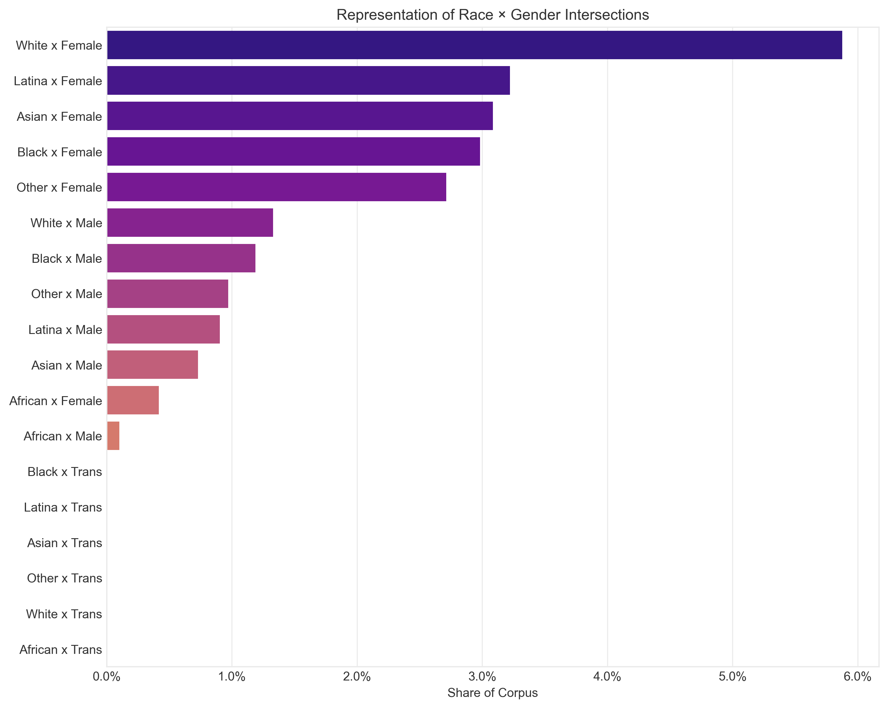
Key Observations
- Severe underrepresentation: Black Women comprise only 2.98% of the corpus (15,966 videos), Latina Women 2.63% (14,070), and Asian Women 2.84% (15,196) — against White Women's much larger share
- 52 features across 111 categories including protected attributes (race, gender, sexuality, age) inferred from user-submitted tags and platform metadata
- Engagement gap: White Women average 4.26 views/day vs. 3.46 (Black), 3.44 (Latina), and 3.43 (Asian) — and Black Women's ratings are declining 3.38 points/year faster than the corpus average
- Linguistic harm: PMI analysis shows racial identity is encoded primarily through user-submitted tags (e.g. "black girl", PMI 5.07) rather than platform-assigned categories
2. Exploratory Data Analysis
Deep dive into the dataset reveals systematic patterns of representation disparity across intersectional groups.
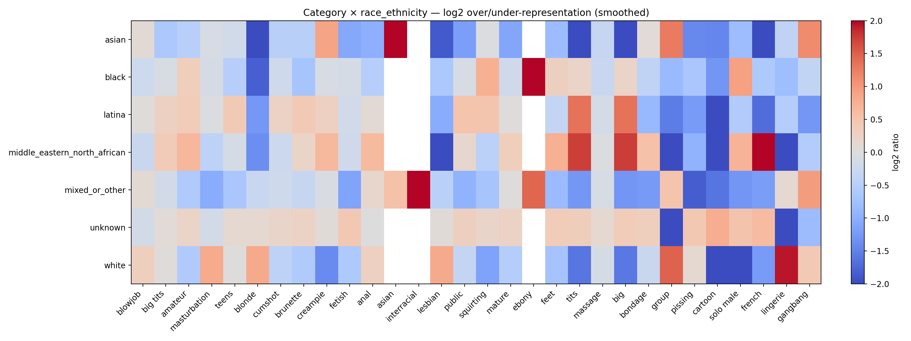
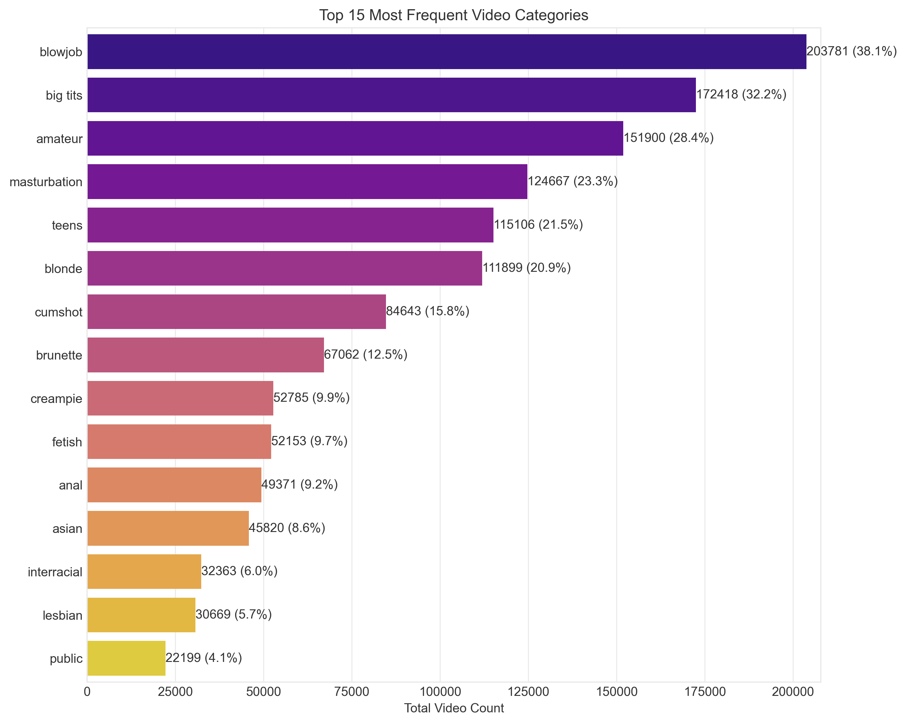
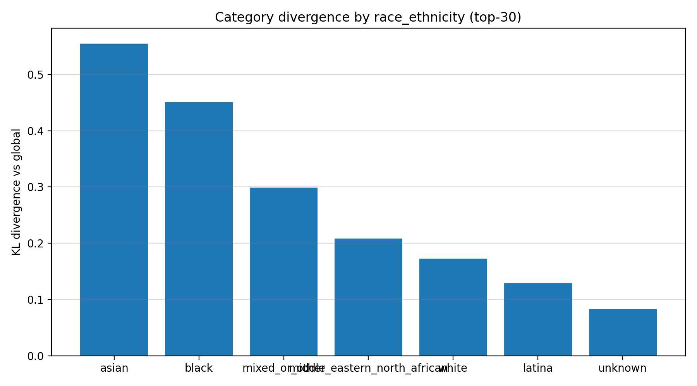
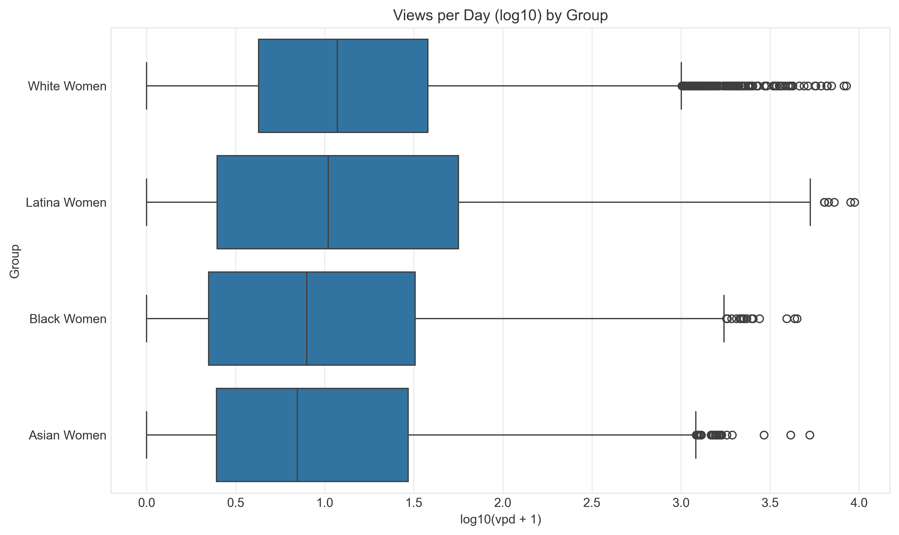
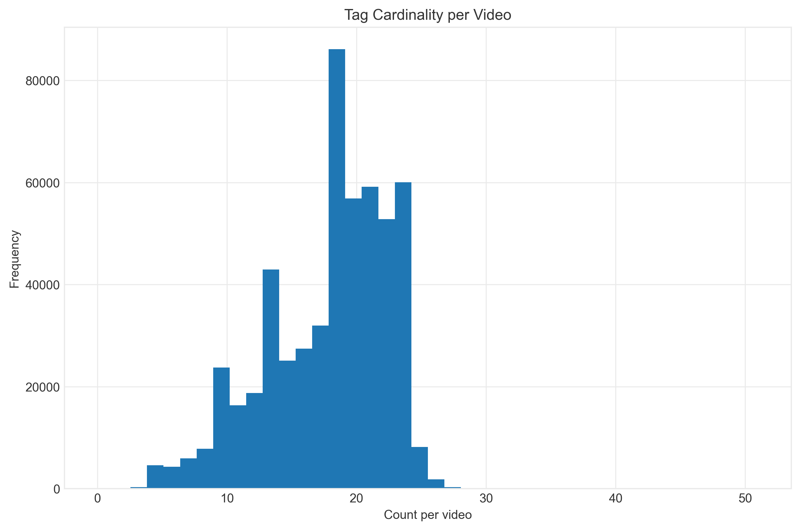
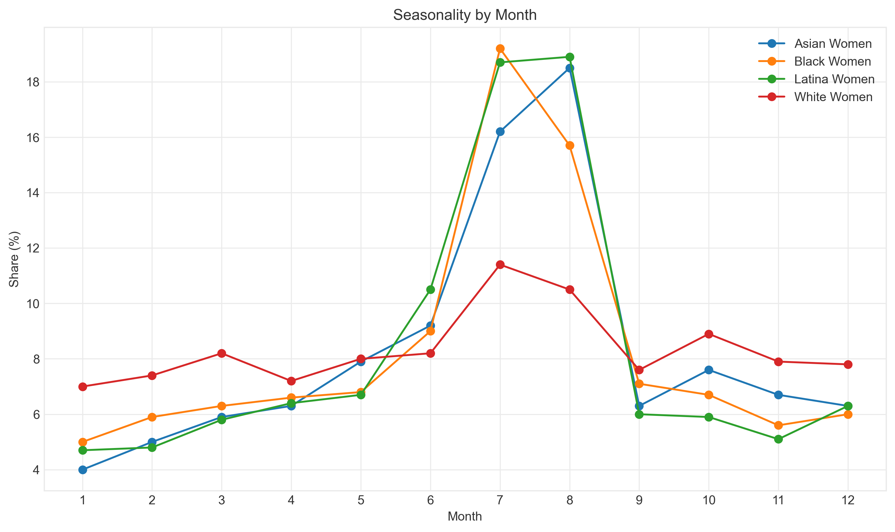
3. Model Performance: The Bias Problem
High overall accuracy masks severe performance disparities across demographic groups. This is the core finding: aggregate metrics lie.
Random Forest Performance by Intersectional Group
| Group | Accuracy | Recall | F1-Score | EOD vs. White Women |
|---|---|---|---|---|
| Latina Women | 81.0% | 0.558 | 0.664 | 0.200 |
| Black Women | 84.4% | 0.562 | 0.686 | 0.196 |
| Asian Women | 87.6% | 0.649 | 0.740 | 0.109 |
| White Women | 91.7% | 0.758 | 0.842 | — |
Overall test accuracy is 87.8% (F1: 0.758) — but Black Women's recall of 0.562 means nearly one in five of their videos is miscategorized that shouldn't be. DistilBERT (92.4% accuracy, F1: 0.868) narrows the Black Women recall gap substantially (EOD: 0.196 → 0.080) but remains Pareto-dominated by the mitigation strategies below on either accuracy or fairness.
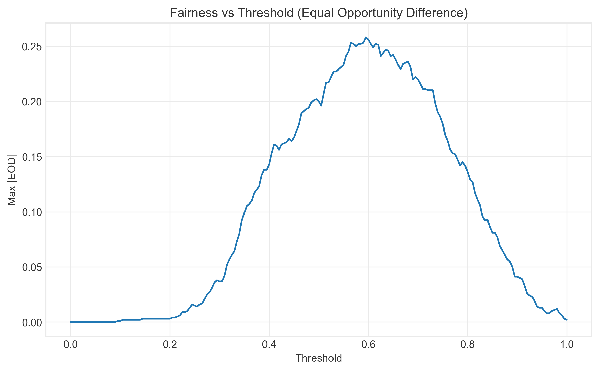
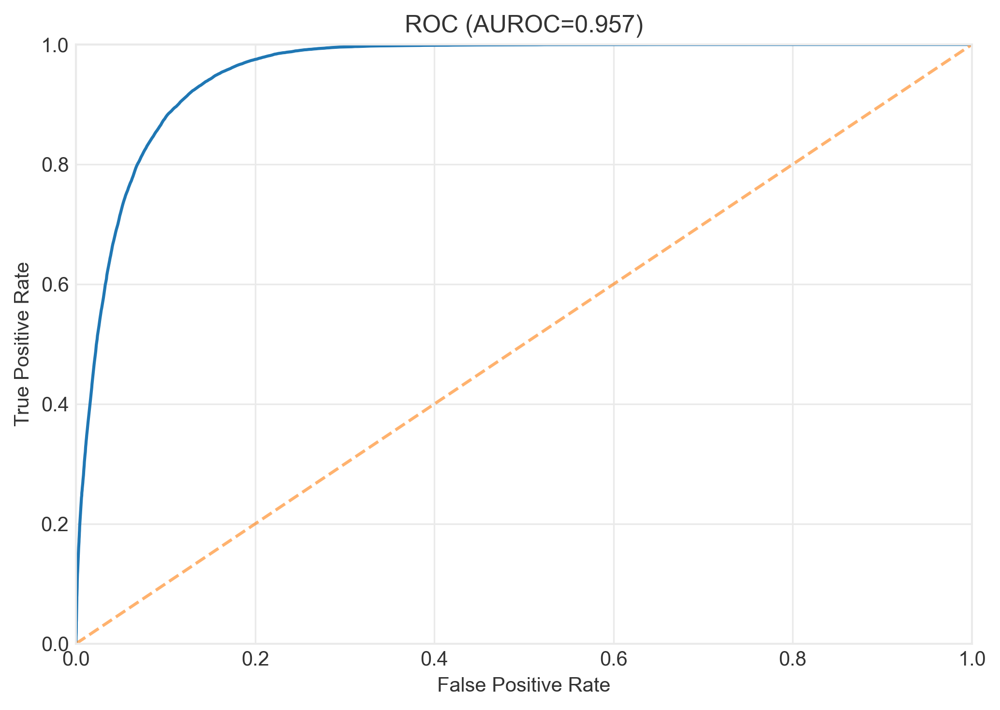
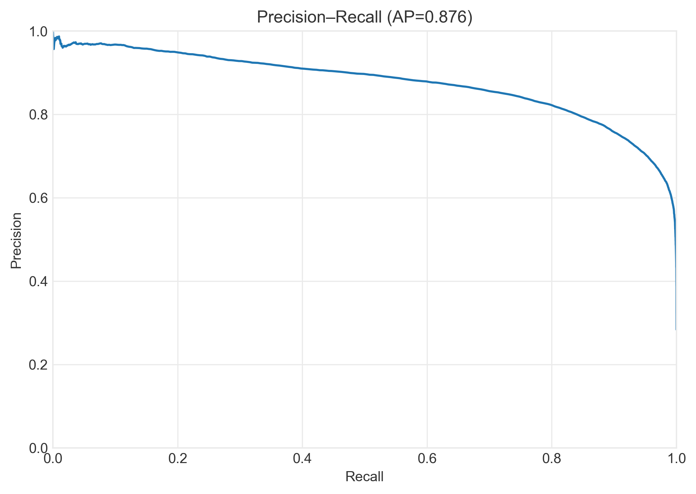
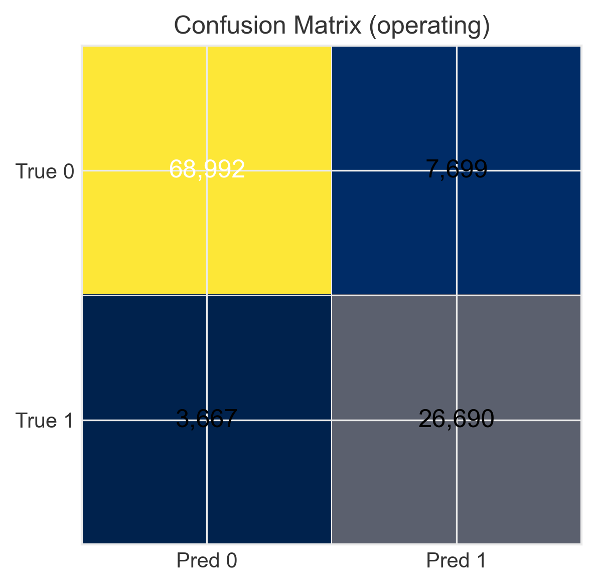
4. Bias Mitigation: Finding Solutions
I benchmarked six fairness interventions across the ML pipeline with Pareto analysis. The key insight: the theoretically favored technique isn't always the one that works.
Pre-Processing
Technique: Reweighing
Adjusts sample weights to balance group representation before training.
- ✅ Best accuracy of any strategy (95.3%)
- ✅ Black Women EOD: 0.196 → 0.092 (−53%)
- ✅ Non-dominated — Pareto-optimal
In-Processing
Technique: Exponentiated Gradient + Demographic Parity
Constrains optimization to satisfy fairness during training.
- ⚠️ Accuracy unchanged (87.8%)
- ⚠️ Max EOD worsens to 0.297 (Latina)
- ❌ Dominated on the Pareto frontier
In-Processing (Adversarial)
Technique: Adversarial Debiasing
Trains a predictor against an adversary that tries to infer the protected attribute — the literature's favored approach.
- ❌ Accuracy drops to 79.6%
- ❌ Asian Women EOD worsens: 0.109 → 0.283
- ❌ Dominated on both accuracy and fairness
Post-Processing
Technique: ThresholdOptimizer (Equalized Odds)
Adjusts decision thresholds per group after training, no retraining required.
- ✅ Near-exact parity: max EOD 0.027
- ⚠️ 3.9pp accuracy cost (83.9%)
- ✅ Non-dominated — best when parity is the mandate
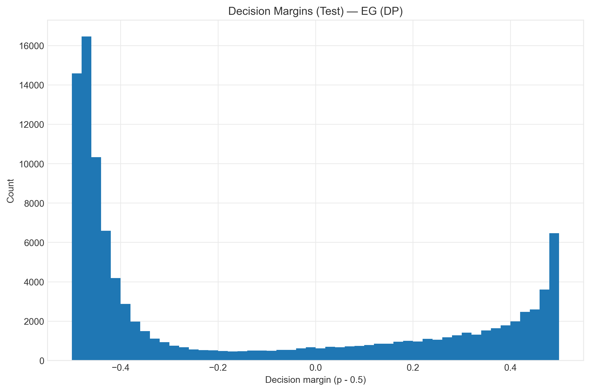
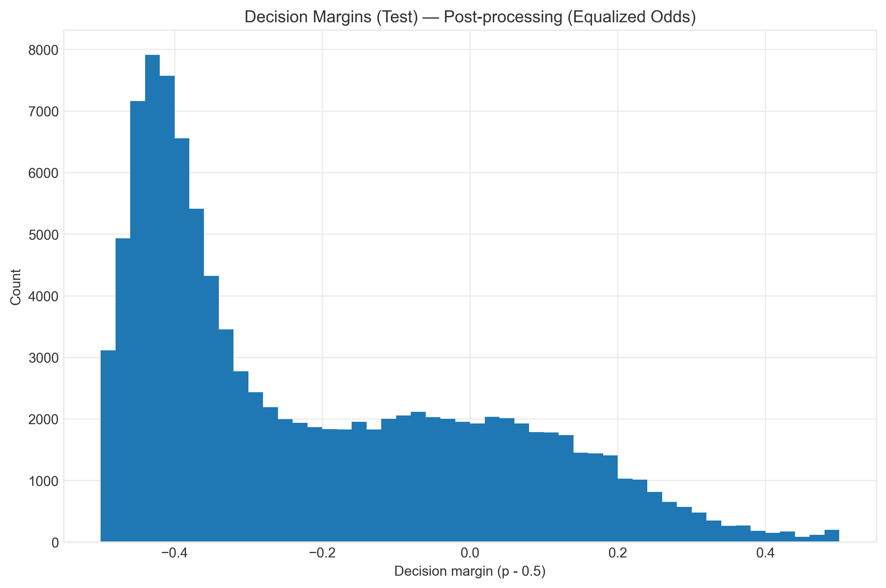
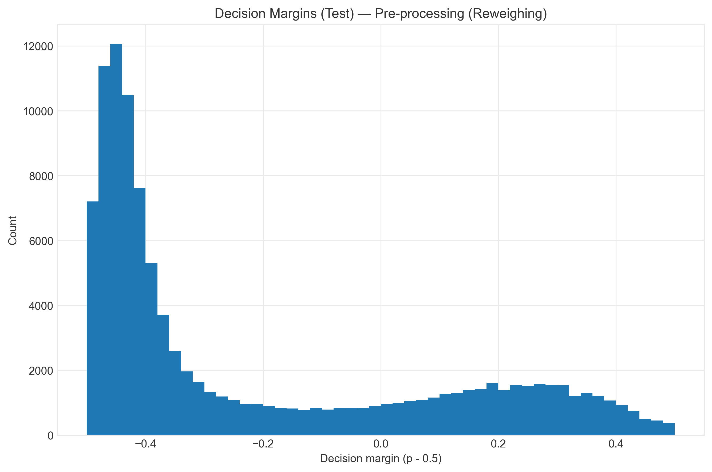
5. The Accuracy-Fairness Trade-off
The Pareto frontier reveals which models achieve optimal trade-offs between predictive accuracy and demographic fairness. This is the key decision tool for practitioners.
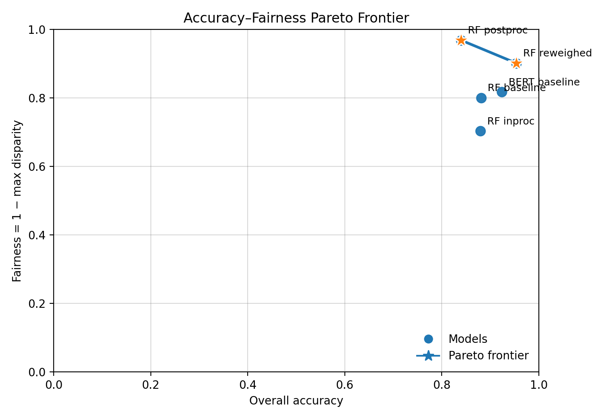
Reading the Frontier
6. The 30-Step Reproducible Pipeline
This is a complete, reproducible research framework, not just a paper. Every step is automated, documented, and version-controlled.
Data & Bias Discovery
Modeling & Fairness
Advanced Analysis
Synthesis & Outputs
Technical Implementation
Core ML & Fairness
Data & Analysis
Visualization
Infrastructure
Sample: Fairness Evaluation
from fairlearn.metrics import (
demographic_parity_difference,
equalized_odds_difference
)
# Calculate fairness metrics by group
dpd = demographic_parity_difference(
y_true, y_pred,
sensitive_features=df['intersectional_group']
)
eod = equalized_odds_difference(
y_true, y_pred,
sensitive_features=df['intersectional_group']
)
print(f"Demographic Parity Diff: {dpd:.4f}")
print(f"Equalized Odds Diff: {eod:.4f}")Key Takeaways
Bias is Measurable
Intersectional fairness metrics reveal discrimination invisible to aggregate accuracy scores.
Bias is Fixable
Reweighing cut Black Women's EOD by 53% while improving accuracy to 95.3%; ThresholdOptimizer got to near-exact parity (max EOD 0.027).
The "Obvious" Fix Backfired
Adversarial debiasing — the literature's favored technique — worsened outcomes for Asian and Latina Women, because their content vocabulary is the classification signal.
Reproducibility Matters
30-step automated pipeline ensures every finding can be verified and extended.
Explore the Research
The complete codebase, data processing pipeline, and analysis notebooks are available on GitHub. The dissertation was awarded with Distinction at the University of Essex.